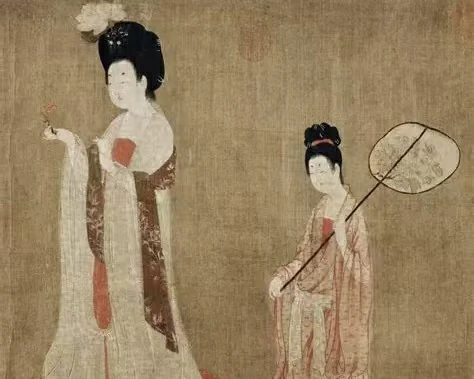
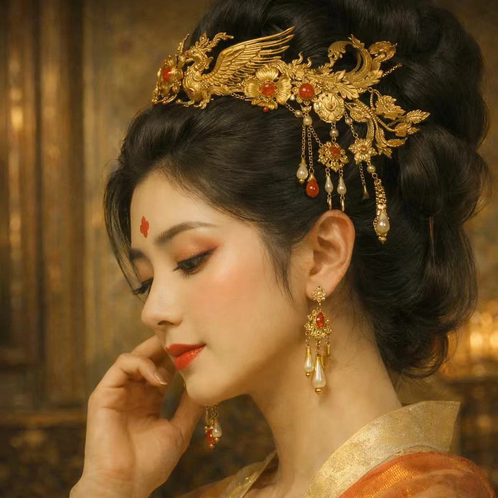
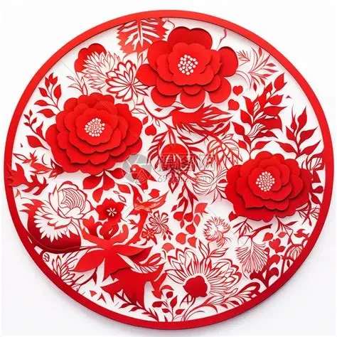
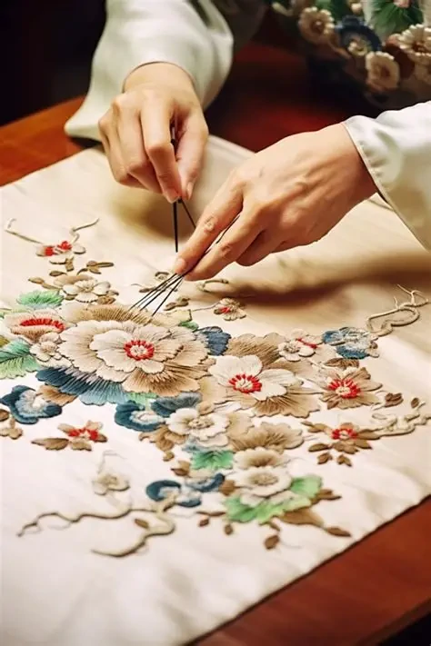
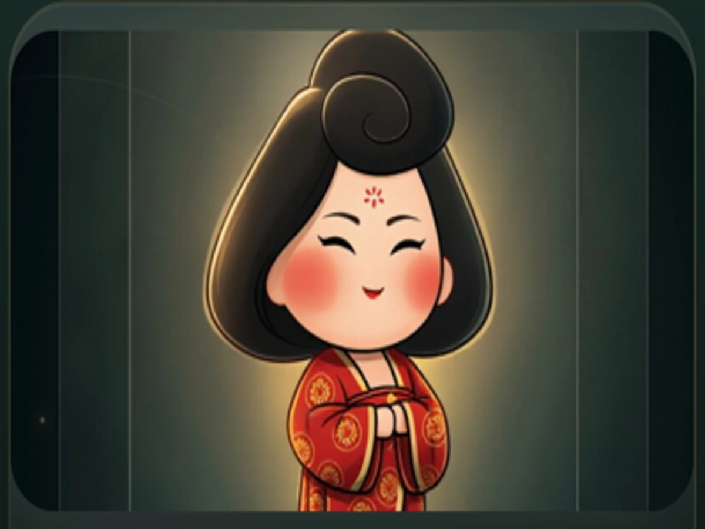
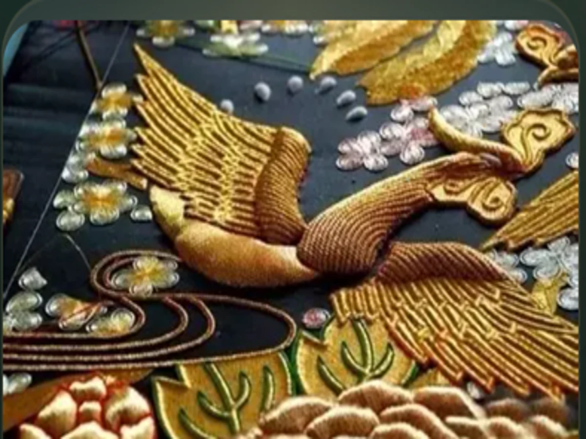
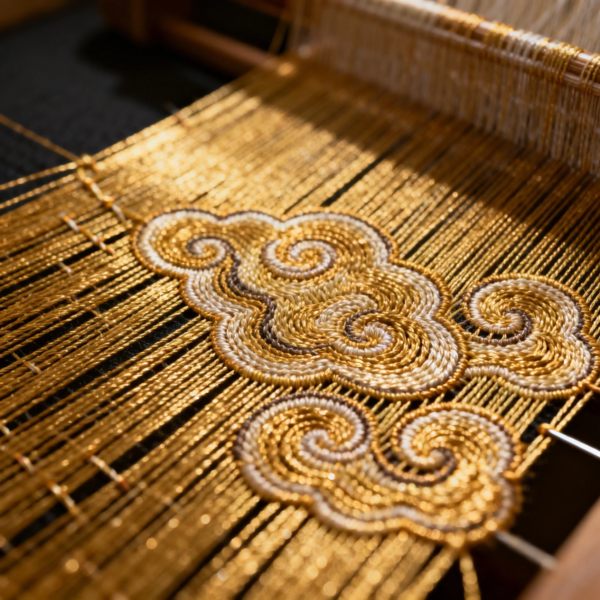
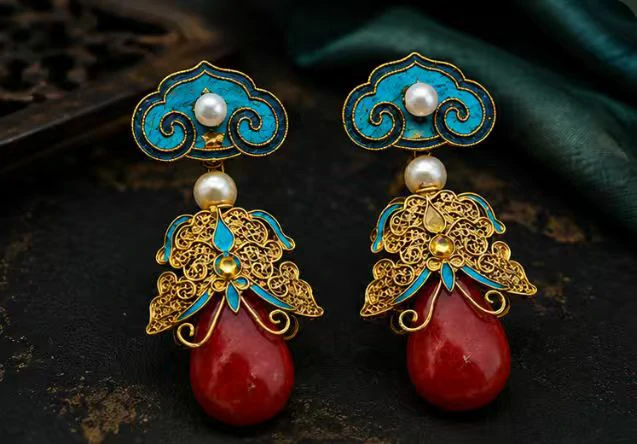

大唐女性美学
妆造、礼仪、丝绸与女性日常并置成一幅缓慢展开的长卷, 让未来东方不止停留在视觉风格, 而成为一种可被感知的气质


非遗活态传承
刺绣、剪纸、香艺、花钿与首饰不被当作冷静的资料, 而是作为仍有体温的技艺, 在光泽、纹理与细节中重新苏醒


AI数字人格
唐姝作为数字传承人, 将文化叙事、情感陪伴与智能交互融为一体, 让人与技艺的对话重新拥有温度与耐心

数字非遗的全新表达方式
技术并没有站在台前 它更像一位沉默的匠人, 藏在故事、光影与记忆背后, 悄悄编织着这一段旅程 于是你遇见的不只是一个页面, 而是一场关于女性、非遗与盛唐美学的沉浸式对话
AI数字传承人
唐姝将以唐风语境回应提问、讲述纹理、引导研习, 让文化陪伴替代冰冷说明

毫米级非遗复刻
丝绸的反光、金线的折射与花钿的细部纹理, 将被重新放大到肉眼难以抵达的尺度

AI赋能文创
文案、海报、视频脚本与视觉表达会在同一套东方叙事下继续生长, 让非遗重新进入当代传播与创造

长安夜色中的六件微光展品
人们总会先看见她的身影, 再慢慢走进她的故事 未来当更多真实内容被填充进来, 这里也将成为用户初遇唐姝时最具代入感的一幕

唐妆
柔和灯影中, 面饰与眉形重新浮现出盛唐女性的仪态

花钿
微距之下, 花形与金箔折光不再只是纹样, 而是一种情绪

金线刺绣
针脚顺光而行, 丝纹在深色空间里缓慢呼吸

唐代首饰
玉石、金属与光泽共同构成未来东方的材质语言

剪纸
纤薄而坚定的边缘, 让纸面也拥有雕塑般的存在感

香艺
香气未必可见, 但烟雾与轨迹会让它在空间中留下形状